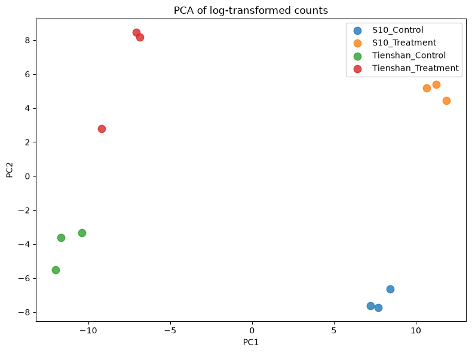
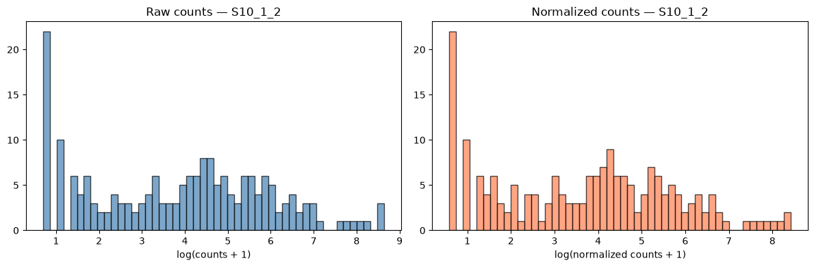
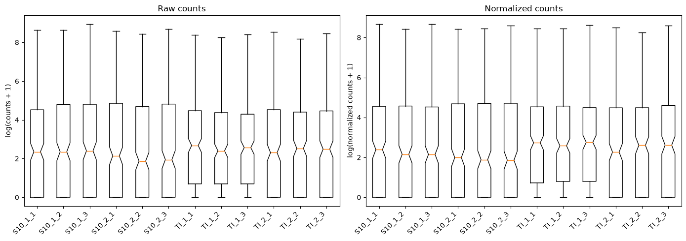
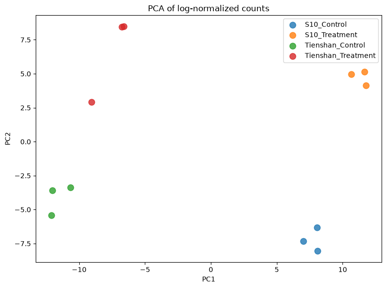
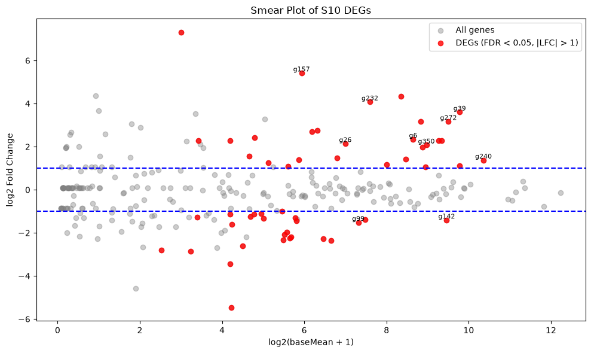
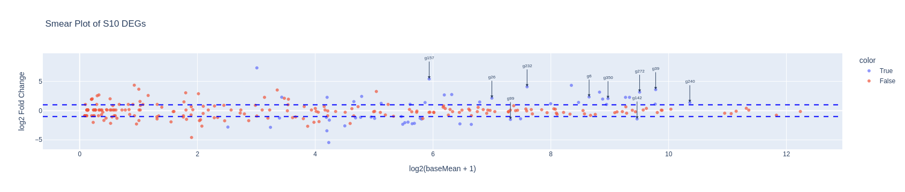
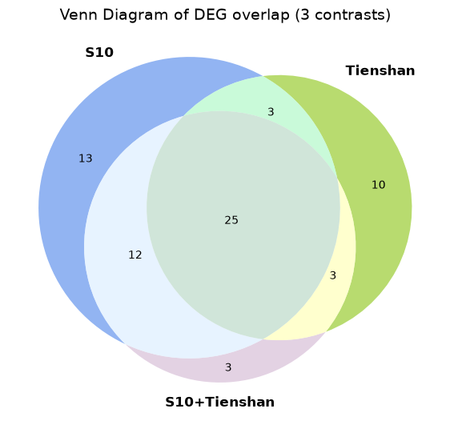

from pydeseq2.ds import DeseqStats
from pydeseq2.default_inference import DefaultInference
import glob
import pandas as pd
import os
from rich.pretty import pprint
import pydeseq2 as pds
from pydeseq2.dds import DeseqDataSet
from pydeseq2.utils import load_example_data # Optional: example data\
import matplotlib.pyplot as plt
import numpy as np
from sklearn.decomposition import PCA
import plotly.express as px
from matplotlib_venn import venn3
NoteTutorial description
This tutorial will cover the steps for performing Differential Gene Expression on the RNA-seq data obtained from the alignment session. At the end of this tutorial you will be able to use Python to
- Perform preliminary analyses of the RNA-seq results
- Find differentially expressed genes between two conditions using
pydeseq2 - Produce relevant data visualizations
Load the necessary Python libraries
PyDESeq2 - Data filtering and Normalization
We will use the pydeseq2 package to test for differentially expressed genes between our Control and Treatment Samples - this package is based on the very popular DeSeq2 software (Love et al. 2014). You can read more about the pydeseq2 package and its functionalities here. This exercise largely follows their documentation.
File processing
The data for this exercise comes from the 12 tabular files with Reads per Gene counts generated by STAR Mapping in the raw-data alignment part of this course. We want to create a table where each column is a sample, and the content of the table are the read counts from STAR. We must merge the 12 files with Reads per Gene information into a single file.
- If you aligned datasets in the first notebook with jupyterlab, then you will find the files - 12 files precisely - using the following command:
# Get the list of sample files and sort them
samples = sorted(glob.glob("results/STAR_output/*_align_contigs_1_2/*ReadsPerGene.out.tab"))
pprint(samples)
# Read and combine counts
read_counts_list = []
for sample in samples:
df = pd.read_csv(sample, sep="\t", header=None, skiprows=4)
read_counts_list.append(df[[1]]) # index 1 = unstranded counts (column 2 in STAR's 1-indexed output)
# Concatenate all counts side by side (cbind equivalent)
read_counts = pd.concat(read_counts_list, axis=1)
# Optionally: set gene names from the first column of the first file
genes = list(pd.read_csv(samples[0], sep="\t", header=None, skiprows=4)[0])
read_counts.index = genes
# Optionally: assign sample names to columns
sample_names = [os.path.basename(path).replace("ReadsPerGene.out.tab", "") for path in samples]
read_counts.columns = sample_names[ │ 'results/STAR_output/S10_align_contigs_1_2/S10_1_1ReadsPerGene.out.tab', │ 'results/STAR_output/S10_align_contigs_1_2/S10_1_2ReadsPerGene.out.tab', │ 'results/STAR_output/S10_align_contigs_1_2/S10_1_3ReadsPerGene.out.tab', │ 'results/STAR_output/S10_align_contigs_1_2/S10_2_1ReadsPerGene.out.tab', │ 'results/STAR_output/S10_align_contigs_1_2/S10_2_2ReadsPerGene.out.tab', │ 'results/STAR_output/S10_align_contigs_1_2/S10_2_3ReadsPerGene.out.tab', │ 'results/STAR_output/TI_align_contigs_1_2/TI_1_1ReadsPerGene.out.tab', │ 'results/STAR_output/TI_align_contigs_1_2/TI_1_2ReadsPerGene.out.tab', │ 'results/STAR_output/TI_align_contigs_1_2/TI_1_3ReadsPerGene.out.tab', │ 'results/STAR_output/TI_align_contigs_1_2/TI_2_1ReadsPerGene.out.tab', │ 'results/STAR_output/TI_align_contigs_1_2/TI_2_2ReadsPerGene.out.tab', │ 'results/STAR_output/TI_align_contigs_1_2/TI_2_3ReadsPerGene.out.tab' ]
The resulting table has genes as rows and samples as columns and stores the gene expression counts (value representing the total number of sequence reads that originated from a particular gene in a sample) for each of the 12 samples. This data frame should have 12 columns and 366 rows.
read_counts.head()| S10_1_1 | S10_1_2 | S10_1_3 | S10_2_1 | S10_2_2 | S10_2_3 | TI_1_1 | TI_1_2 | TI_1_3 | TI_2_1 | TI_2_2 | TI_2_3 | |
|---|---|---|---|---|---|---|---|---|---|---|---|---|
| g175 | 143 | 226 | 227 | 218 | 206 | 191 | 234 | 204 | 198 | 220 | 206 | 164 |
| g176 | 17 | 12 | 15 | 8 | 14 | 18 | 29 | 19 | 30 | 6 | 11 | 23 |
| g177 | 0 | 0 | 0 | 0 | 0 | 0 | 0 | 0 | 0 | 0 | 0 | 0 |
| g178 | 0 | 0 | 0 | 0 | 0 | 0 | 0 | 0 | 2 | 2 | 1 | 2 |
| g179 | 0 | 0 | 0 | 0 | 0 | 0 | 0 | 0 | 0 | 0 | 0 | 0 |
print(f'Size of the table: {read_counts.shape}')Size of the table: (366, 12)Load the metadata table, which contains information about each of the 12 RNA-seq samples: treatment (Condition), genotype, and replicate.
Note that the order of the rows in the Metadata table should be the same as the columns in the Read_counts file generated above — pydeseq2 uses these to align the expression table with the correct sample information.
In order to aid the analysis, we will create a Group for each sample (a new column in the metadata) in the format Genotype_Condition of each sample and assign the three replicates to this group.
# Read the metadata CSV, using ";" as separator and first column as index
metadata = pd.read_csv("../Data/Clover_Data/metadata.csv", sep=";", index_col=0)
# Create 'Group' column by combining 'Genotype' and 'Condition' columns
metadata["Group"] = metadata["Genotype"].astype(str) + "_" + metadata["Condition"].astype(str)
# Display updated metadata
pprint("Metadata after adding group")
metadata'Metadata after adding group'
| Condition | Genotype | Replicate | Group | |
|---|---|---|---|---|
| Sample | ||||
| S10_1_1 | Control | S10 | 1 | S10_Control |
| S10_1_2 | Control | S10 | 2 | S10_Control |
| S10_1_3 | Control | S10 | 3 | S10_Control |
| S10_2_1 | Treatment | S10 | 1 | S10_Treatment |
| S10_2_2 | Treatment | S10 | 2 | S10_Treatment |
| S10_2_3 | Treatment | S10 | 3 | S10_Treatment |
| TI_1_1 | Control | Tienshan | 1 | Tienshan_Control |
| TI_1_2 | Control | Tienshan | 2 | Tienshan_Control |
| TI_1_3 | Control | Tienshan | 3 | Tienshan_Control |
| TI_2_1 | Treatment | Tienshan | 1 | Tienshan_Treatment |
| TI_2_2 | Treatment | Tienshan | 2 | Tienshan_Treatment |
| TI_2_3 | Treatment | Tienshan | 3 | Tienshan_Treatment |
Create the annotated data object for pydeseq2
We combine the read counts and the metadata into a DeseqDataSet object, which stores the count matrix together with sample metadata and is used for all downstream analysis steps in pydeseq2.
Note that genes with zero counts across all samples are removed before creating the object.
# Optional: remove genes with all zero counts (as remove.zeros=TRUE in edgeR)
read_counts_filtered = read_counts[(read_counts > 0).sum(axis=1) > 0]
# Relevel condition so that 'Control' is the reference level
metadata["Condition"] = pd.Categorical(metadata["Condition"], categories=["Control"] +
[c for c in metadata["Condition"].unique() if c != "Control"],
ordered=True)
inference = DefaultInference(n_cpus=2) #just some compute settings
# Create DESeq2 dataset
dds = DeseqDataSet(
counts=read_counts_filtered.astype(int).T, # DESeq2 expects integer counts
metadata=metadata[["Condition", "Genotype", "Group"]], # include relevant columns
design="~Group", # use Group as main design factor
inference=inference
)
# Check the object
ddsAnnData object with n_obs × n_vars = 12 × 270
obs: 'Condition', 'Genotype', 'Group'
obsm: 'design_matrix'The object created is an annotated dataset, which we will encounter also in single cell RNA analysis. It contains a matrix and can store metadata for both rows and columns. All can be accessed directly from the object as you see below:
# Count matrix (samples × genes)
dds.Xarray([[143, 17, 0, ..., 0, 1, 80],
[226, 12, 0, ..., 5, 2, 107],
[227, 15, 0, ..., 0, 2, 120],
...,
[220, 6, 2, ..., 1, 3, 96],
[206, 11, 1, ..., 0, 3, 103],
[164, 23, 2, ..., 0, 0, 105]])#metadata for the samples
dds.obs| Condition | Genotype | Group | |
|---|---|---|---|
| Sample | |||
| S10_1_1 | Control | S10 | S10_Control |
| S10_1_2 | Control | S10 | S10_Control |
| S10_1_3 | Control | S10 | S10_Control |
| S10_2_1 | Treatment | S10 | S10_Treatment |
| S10_2_2 | Treatment | S10 | S10_Treatment |
| S10_2_3 | Treatment | S10 | S10_Treatment |
| TI_1_1 | Control | Tienshan | Tienshan_Control |
| TI_1_2 | Control | Tienshan | Tienshan_Control |
| TI_1_3 | Control | Tienshan | Tienshan_Control |
| TI_2_1 | Treatment | Tienshan | Tienshan_Treatment |
| TI_2_2 | Treatment | Tienshan | Tienshan_Treatment |
| TI_2_3 | Treatment | Tienshan | Tienshan_Treatment |
#metadata for the genes (right now empty)
dds.var| g175 |
|---|
| g176 |
| g178 |
| g180 |
| g181 |
| ... |
| g169 |
| g170 |
| g171 |
| g172 |
| g173 |
270 rows × 0 columns
# metadata matrices for the samples. In this case we have the design matrix only.
dds.obsmAxisArrays with keys: design_matrix# the actual matrix — rows=samples, cols=groups
dds.obsm['design_matrix']| Intercept | Group[T.S10_Treatment] | Group[T.Tienshan_Control] | Group[T.Tienshan_Treatment] | |
|---|---|---|---|---|
| Sample | ||||
| S10_1_1 | 1.0 | 0 | 0 | 0 |
| S10_1_2 | 1.0 | 0 | 0 | 0 |
| S10_1_3 | 1.0 | 0 | 0 | 0 |
| S10_2_1 | 1.0 | 1 | 0 | 0 |
| S10_2_2 | 1.0 | 1 | 0 | 0 |
| S10_2_3 | 1.0 | 1 | 0 | 0 |
| TI_1_1 | 1.0 | 0 | 1 | 0 |
| TI_1_2 | 1.0 | 0 | 1 | 0 |
| TI_1_3 | 1.0 | 0 | 1 | 0 |
| TI_2_1 | 1.0 | 0 | 0 | 1 |
| TI_2_2 | 1.0 | 0 | 0 | 1 |
| TI_2_3 | 1.0 | 0 | 0 | 1 |
# Gene-level matrices — stores per-gene model coefficients (LFC) after fitting (no gene-level matrices have been computed yet)
dds.varmAxisArrays with keys: Preliminary data analysis
This is not part of the actual differential gene expression analysis but is helpful for data exploration and quality assessment.
We will create a PCA plot of the samples to assess differences between genotypes and conditions, and to check that replicates cluster together. The counts are log-transformed (log(x+1)) before PCA to reduce the influence of highly expressed genes.
X_reduced = PCA(n_components=2).fit_transform(np.log1p(dds.X))
groups = dds.obs["Group"].unique()
colors = plt.cm.tab10.colors
plt.figure(figsize=(8, 6))
for i, group in enumerate(groups):
mask = dds.obs["Group"] == group
plt.scatter(X_reduced[mask, 0], X_reduced[mask, 1],
color=colors[i], label=group, alpha=0.8, s=80)
plt.legend(loc="upper right", shadow=False, scatterpoints=1)
plt.xlabel("PC1")
plt.ylabel("PC2")
plt.title("PCA of log-transformed counts")
plt.tight_layout()
plt.show()
You can store the PCA matrix inside the annotated data object. The matrix for the PCA has two columns
X_reducedarray([[ 7.70717941, -7.72982 ],
[ 7.22436745, -7.62822705],
[ 8.41462382, -6.63198754],
[ 11.87119167, 4.44603053],
[ 11.23186623, 5.40858616],
[ 10.64812719, 5.18561154],
[-11.99686215, -5.51210109],
[-10.37053286, -3.32337739],
[-11.65944922, -3.61266337],
[ -7.0535725 , 8.44372972],
[ -9.18313011, 2.78915611],
[ -6.83380895, 8.16506238]])so it is saved in dds.obsm
dds.obsm['X_reduced'] = X_reduced.copy()ddsAnnData object with n_obs × n_vars = 12 × 270
obs: 'Condition', 'Genotype', 'Group'
obsm: 'design_matrix', 'X_reduced'Filtering the lowly expressed genes
As seen previously, many genes have a low number of read counts in our samples. The genes with very low counts across all libraries provide little evidence for differential expression, thus we should eliminate these genes before the analysis.
In pydeseq2, low-count filtering is applied internally during model fitting. The basic pre-filtering step already performed above removes genes with zero counts across all samples. Additional filtering (e.g. keeping only genes with at least 10 reads in any group) can be applied manually before creating the DeseqDataSet.
Normalized counts - Exploratory Data analysis
For data analysis purposes normalized log2 counts can be extracted from the DGEList object using the “Median of Ration” method - it calculates a per-sample linear scaling factor to correct for differences in sequencing depth and library composition. Ideally, remaining data will account for biological variation only (see more on normalization: Love et al. 2014).
We will generate the same plots as for the raw counts in order to compare the data before and after normalization. Sorry for the long code - most of it is to write text on the plots.
TipQuestion
- Q1. Do the plots for normalized counts look much different compared with the plots computed before data filtering and normalization?
- Q2. Does it make sense when you look at the group separation in the PCA plot?
# Compute normalized counts using DESeq2's median-of-ratios method
norm_counts = pds.preprocessing.deseq2_norm(dds.X)[0]
log_norm = np.log1p(norm_counts)
log_raw = np.log1p(dds.X)
# Histogram: raw vs normalized for one sample (S10_1_2)
fig, axes = plt.subplots(1, 2, figsize=(12, 4))
axes[0].hist(log_raw[1][log_raw[1]>0], bins=50, color='steelblue', edgecolor='black', alpha=0.7)
axes[0].set_xlabel('log(counts + 1)')
axes[0].set_title('Raw counts — S10_1_2')
axes[1].hist(log_norm[1][log_norm[1]>0], bins=50, color='coral', edgecolor='black', alpha=0.7)
axes[1].set_xlabel('log(normalized counts + 1)')
axes[1].set_title('Normalized counts — S10_1_2')
plt.tight_layout()
plt.show()
# Boxplot: all 12 samples side by side
sample_names = list(dds.obs_names)
fig, axes = plt.subplots(1, 2, figsize=(14, 5))
axes[0].boxplot(log_raw.T, notch=sample_names)
axes[0].set_xticklabels(sample_names, rotation=45, ha='right')
axes[0].set_ylabel('log(counts + 1)')
axes[0].set_title('Raw counts')
axes[1].boxplot(log_norm.T, notch=sample_names)
axes[1].set_xticklabels(sample_names, rotation=45, ha='right')
axes[1].set_ylabel('log(normalized counts + 1)')
axes[1].set_title('Normalized counts')
plt.tight_layout()
plt.show()
# PCA of normalized counts — compare with the raw-counts PCA above
X_reduced_norm = PCA(n_components=2).fit_transform(log_norm)
groups = dds.obs['Group'].unique()
colors = plt.cm.tab10.colors
plt.figure(figsize=(8, 6))
for i, group in enumerate(groups):
mask = dds.obs['Group'] == group
plt.scatter(X_reduced_norm[mask, 0], X_reduced_norm[mask, 1],
color=colors[i], label=group, alpha=0.8, s=80)
plt.legend(loc='upper right', shadow=False, scatterpoints=1)
plt.xlabel('PC1')
plt.ylabel('PC2')
plt.title('PCA of log-normalized counts')
plt.tight_layout()
plt.show()


PyDESeq2 - Testing for Differentially expressed genes (DEGs)
We now test for differentially expressed genes using pydeseq2, which fits a Generalized Linear Model (GLM) with a negative binomial distribution. Normalization, dispersion estimation, and model fitting are all handled automatically by dds.deseq2().
In pydeseq2, the design matrix is constructed automatically from the design formula specified when creating the DeseqDataSet (e.g. "~Group"). You can inspect it via dds.obsm['design_matrix']. The samples belonging to each group are assigned indicator values in this matrix.
For pairwise comparisons between groups, pydeseq2 uses the contrast parameter in DeseqStats, which directly specifies the factor name, numerator level, and denominator level. For example:
contrast=["Group", "S10_Treatment", "S10_Control"]tests S10 Treatment vs S10 Control
contrast=["Group", "Tienshan_Treatment", "Tienshan_Control"]tests Tienshan Treatment vs Tienshan Control
The combined analysis across both genotypes is done with a separate DeseqDataSet using design="~Condition".
# Fit the DESeq2 model — estimates dispersions and LFC for all genes
# Must be run before any DeseqStats call
dds.deseq2()Using None as control genes, passed at DeseqDataSet initializationFitting size factors...
... done in 0.00 seconds.
Fitting dispersions...
... done in 0.08 seconds.
Fitting dispersion trend curve...
... done in 0.02 seconds.
Fitting MAP dispersions...
... done in 0.11 seconds.
Fitting LFCs...
... done in 0.11 seconds.
Calculating cook's distance...
... done in 0.01 seconds.
Replacing 0 outlier genes.
Look again at the dds object. It is now populated with a lot of data. This will be used to produce the differential gene expression results.
ddsAnnData object with n_obs × n_vars = 12 × 270
obs: 'Condition', 'Genotype', 'Group', 'size_factors', 'replaceable'
var: '_normed_means', 'non_zero', '_MoM_dispersions', 'genewise_dispersions', '_genewise_converged', 'fitted_dispersions', 'MAP_dispersions', '_MAP_converged', 'dispersions', '_outlier_genes', '_LFC_converged', 'replaced', 'refitted', '_pvalue_cooks_outlier'
uns: 'trend_coeffs', 'disp_function_type', '_squared_logres', 'prior_disp_var'
obsm: 'design_matrix', 'X_reduced', '_mu_LFC', '_hat_diagonals'
varm: 'LFC'
layers: 'normed_counts', '_mu_hat', 'cooks'DEGs for White clover S10 plants Treatment vs Control
Find DEGs for White clover S10 plants in Treatment condition compared with the Control condition. We test for differentially expressed genes using DeseqStats from pydeseq2, which applies a Wald test on the negative binomial GLM coefficients. We specify the contrast of interest and call summary() to extract results for all genes.
# Perform statistical test for S10_Treatment vs S10_Control
stat_S10 = DeseqStats(dds, contrast=["Group", "S10_Treatment", "S10_Control"], n_cpus=2)
stat_S10.summary()
# Extract results sorted by adjusted p-value (like topTags)
deg_S10 = stat_S10.results_df.sort_values("padj")Log2 fold change & Wald test p-value: Group S10_Treatment vs S10_Control
baseMean log2FoldChange lfcSE stat pvalue padj
g175 202.325510 0.167305 0.145376 1.150841 0.249798 0.393200
g176 17.542125 -0.045418 0.578150 -0.078558 0.937384 0.978053
g178 0.645813 0.099434 3.879734 0.025629 0.979553 NaN
g180 2628.596257 0.081310 0.322491 0.252132 0.800939 0.856350
g181 542.253274 -0.339750 0.156649 -2.168865 0.030093 0.066439
... ... ... ... ... ... ...
g169 0.222692 1.052918 4.427290 0.237824 0.812017 NaN
g170 0.101566 0.099434 4.920498 0.020208 0.983877 NaN
g171 0.788217 0.165912 4.063903 0.040826 0.967435 NaN
g172 2.412618 1.493109 1.050888 1.420807 0.155373 NaN
g173 96.418736 0.276085 0.283291 0.974564 0.329777 0.471110
[270 rows x 6 columns]Running Wald tests...
... done in 0.04 seconds.
We have now created a table with certain parameters calculated for each of the genes analysed. Those are:
log2FoldChange represents the base 2 logarithm of the fold change and shows how much the expression of the gene has changed between the two conditions. A log2FoldChange of 1 means a doubling in the read count between control and treatment samples. Genes with a log2FoldChange higher than 0 are upregulated while genes with a log2FoldChange lower than 0 are downregulated.
baseMean represents the average normalized count across all samples, reflecting the overall expression level of the gene.
stat - the Wald test statistic.
pvalue is the raw p-value.
padj (The adjusted p-value) is calculated using Benjamini and Hochberg’s algorithm. It controls the rate of false positive values under multiple testing. Usually, a threshold of under 5% is set for the adjusted p-value.
The important information for us in this table is stored in the log2FoldChange and padj columns. The top DE genes have small padj values and large fold changes. We choose some typical thresholds in the filtering below:
# Filter by adjusted p-value and log2 fold change
deg_S10_filtered = deg_S10[(deg_S10["padj"] < 0.05) & (deg_S10["log2FoldChange"].abs() > 1)].copy()
# Add gene_ID column from index (like rownames_to_column)
deg_S10_filtered.reset_index(inplace=True)
deg_S10_filtered.rename(columns={"index": "gene_ID"}, inplace=True)
pprint("Preview of filtered table")
# Preview top genes
print(deg_S10_filtered.head())
pprint("Number of (significantly) differentially expressed genes")
# Number of genes that passed the filter
print(len(deg_S10_filtered))'Preview of filtered table'
gene_ID baseMean log2FoldChange lfcSE stat pvalue \
0 g39 877.890622 3.602312 0.199468 18.059601 6.629965e-73
1 g232 192.523135 4.074923 0.321700 12.666850 9.026655e-37
2 g6 400.531797 2.343831 0.207191 11.312434 1.138863e-29
3 g350 500.560508 2.073565 0.236033 8.785074 1.562614e-18
4 g240 1312.596919 1.375930 0.166241 8.276734 1.266000e-16
padj
0 1.127094e-70
1 7.672657e-35
2 6.453558e-28
3 6.641108e-17
4 4.304402e-15 'Number of (significantly) differentially expressed genes'
53We can also visualize the selected genes by plotting a Smear plot or a Volcano plot. The Genes that passed the filter are coloured in red, and the top 10 genes with the lowest padj value are labelled with their gene ID.
We can see that the majority of the genes analysed are either not statistically significant or have a very small log2-fold change.
# Scatter plot of all genes: logCPM vs log2FC
plt.figure(figsize=(10, 6))
plt.scatter(deg_S10["baseMean"].apply(lambda x: np.log2(x + 1)),
deg_S10["log2FoldChange"],
color="grey", alpha=0.4, label="All genes")
# Highlight filtered DEGs in red
plt.scatter(deg_S10_filtered["baseMean"].apply(lambda x: np.log2(x + 1)),
deg_S10_filtered["log2FoldChange"],
color="red", alpha=0.8, label="DEGs (FDR < 0.05, |LFC| > 1)")
# Label top 10 DEGs
for i in range(min(10, len(deg_S10_filtered))):
x = np.log2(deg_S10_filtered.loc[i, "baseMean"] + 1)
y = deg_S10_filtered.loc[i, "log2FoldChange"]
label = deg_S10_filtered.iloc[i, 0]
plt.text(x, y, label, fontsize=8, ha='center', va='bottom')
# Add horizontal lines at logFC ±1
plt.axhline(y=1, color="blue", linestyle="--")
plt.axhline(y=-1, color="blue", linestyle="--")
plt.xlabel("log2(baseMean + 1)")
plt.ylabel("log2 Fold Change")
plt.title("Smear Plot of S10 DEGs")
plt.legend()
plt.tight_layout()
plt.show()
The same plot but interactive
# Prepare data for plotting
deg_S10["logCPM"] = np.log2(deg_S10["baseMean"] + 1) # Approximate logCPM
deg_S10_filtered["logCPM"] = np.log2(deg_S10_filtered["baseMean"] + 1)
# Create Plotly scatter plot
fig = px.scatter(
deg_S10,
x="logCPM",
y="log2FoldChange",
color=(deg_S10["padj"] < 0.05) & (deg_S10["log2FoldChange"].abs() > 1),
title="Smear Plot of S10 DEGs",
labels={"logCPM": "log2(baseMean + 1)", "log2FoldChange": "log2 Fold Change"},
color_continuous_scale=["grey", "red"],
opacity=0.7
)
# Add the top 10 gene labels
for i in range(min(10, len(deg_S10_filtered))):
fig.add_annotation(
x=deg_S10_filtered.iloc[i]["logCPM"],
y=deg_S10_filtered.iloc[i]["log2FoldChange"],
text=deg_S10_filtered.iloc[i][0],
showarrow=True,
arrowhead=2,
ax=0,
ay=-40,
font=dict(size=8)
)
# Add horizontal lines at logFC ±1
fig.add_hline(y=1, line_dash="dash", line_color="blue")
fig.add_hline(y=-1, line_dash="dash", line_color="blue")
# Show the figure
fig.show()
DEGs for White clover Tienshan Treatment vs Control
We can do this using the same functions as above and changing the contrast.
This time we will directly filter the differentially expressed genes using the same parameters as for the S10 samples.
We can now plot a Venn diagram with the DEGs for the two genotypes in order to observe the number of common and specific differentially expressed genes between the two genotypes as response to the cold exposure. You can see that a high percentage of the identified genes are common for the two genotypes, while each genotype has also specific genes.
# Perform statistical test for Tienshan_Treatment vs Tienshan_Control
stat_Ti = DeseqStats(dds, contrast=["Group", "Tienshan_Treatment", "Tienshan_Control"], n_cpus=2)
stat_Ti.summary()
# Extract results sorted by adjusted p-value
deg_Ti = stat_Ti.results_df.sort_values("padj")
# Filter by adjusted p-value and log2 fold change
DEG_Ti_filtered = deg_Ti[(deg_Ti["padj"] < 0.05) & (deg_Ti["log2FoldChange"].abs() > 1)].copy()
DEG_Ti_filtered.reset_index(inplace=True)
DEG_Ti_filtered.rename(columns={"index": "gene_ID"}, inplace=True)
DEG_Ti_filtered.head()
pprint(f"Nr of DEGs (Tienshan): {len(DEG_Ti_filtered)}")Log2 fold change & Wald test p-value: Group Tienshan_Treatment vs Tienshan_Control
baseMean log2FoldChange lfcSE stat pvalue padj
g175 202.325510 -0.243799 0.144983 -1.681571 0.092652 0.184286
g176 17.542125 -1.054188 0.559737 -1.883364 0.059651 0.130083
g178 0.645813 1.130199 2.988306 0.378207 0.705277 NaN
g180 2628.596257 0.823007 0.323475 2.544268 0.010951 0.034174
g181 542.253274 -0.575490 0.155263 -3.706551 0.000210 0.001188
... ... ... ... ... ... ...
g169 0.222692 -0.132776 4.919529 -0.026990 0.978468 NaN
g170 0.101566 -1.094569 4.729271 -0.231446 0.816969 NaN
g171 0.788217 0.829016 4.621494 0.179383 0.857637 NaN
g172 2.412618 -0.142774 1.106279 -0.129058 0.897312 NaN
g173 96.418736 0.333877 0.288993 1.155312 0.247963 0.377153
[270 rows x 6 columns]Running Wald tests...
... done in 0.03 seconds.
'Nr of DEGs (Tienshan): 41'
DEGs for S10+Tienshan Treatment vs Control w/o genotype effects
Until now we tested for DEGs specific for each of the two genotypes under cold treatment. We can also run a test where we ignore the genotype and just test for the differences in the cold response.
Consider the counts for both genotypes as a single dataset using the previously created contrast “S10_Tienshan”.
TipQuestion
- Q3. Do the results look different compared with the previous tests?
# Second DeseqDataSet ignoring genotype — tests Treatment vs Control across both genotypes
dds2 = DeseqDataSet(
counts=read_counts_filtered.astype(int).T,
metadata=metadata[["Condition", "Genotype", "Group"]],
design="~Condition",
inference=inference
)
dds2AnnData object with n_obs × n_vars = 12 × 270
obs: 'Condition', 'Genotype', 'Group'
obsm: 'design_matrix'dds2.obs| Condition | Genotype | Group | |
|---|---|---|---|
| Sample | |||
| S10_1_1 | Control | S10 | S10_Control |
| S10_1_2 | Control | S10 | S10_Control |
| S10_1_3 | Control | S10 | S10_Control |
| S10_2_1 | Treatment | S10 | S10_Treatment |
| S10_2_2 | Treatment | S10 | S10_Treatment |
| S10_2_3 | Treatment | S10 | S10_Treatment |
| TI_1_1 | Control | Tienshan | Tienshan_Control |
| TI_1_2 | Control | Tienshan | Tienshan_Control |
| TI_1_3 | Control | Tienshan | Tienshan_Control |
| TI_2_1 | Treatment | Tienshan | Tienshan_Treatment |
| TI_2_2 | Treatment | Tienshan | Tienshan_Treatment |
| TI_2_3 | Treatment | Tienshan | Tienshan_Treatment |
dds2.obsm['design_matrix']| Intercept | Condition[T.Treatment] | |
|---|---|---|
| Sample | ||
| S10_1_1 | 1.0 | 0 |
| S10_1_2 | 1.0 | 0 |
| S10_1_3 | 1.0 | 0 |
| S10_2_1 | 1.0 | 1 |
| S10_2_2 | 1.0 | 1 |
| S10_2_3 | 1.0 | 1 |
| TI_1_1 | 1.0 | 0 |
| TI_1_2 | 1.0 | 0 |
| TI_1_3 | 1.0 | 0 |
| TI_2_1 | 1.0 | 1 |
| TI_2_2 | 1.0 | 1 |
| TI_2_3 | 1.0 | 1 |
dds2.deseq2()
# Perform statistical test for S10_Treatment vs S10_Control
stat_genotype = DeseqStats(dds2, contrast=["Condition", "Treatment", "Control"], n_cpus=2)
stat_genotype.summary()
# Extract results sorted by adjusted p-value (like topTags)
deg_genotype = stat_genotype.results_df.sort_values("padj")Fitting size factors...
... done in 0.00 seconds.
Fitting dispersions...
... done in 0.10 seconds.
Fitting dispersion trend curve...Using None as control genes, passed at DeseqDataSet initialization... done in 0.03 seconds.
Fitting MAP dispersions...Log2 fold change & Wald test p-value: Condition Treatment vs Control
baseMean log2FoldChange lfcSE stat pvalue padj
g175 202.325510 -0.057171 0.174375 -0.327864 0.743015 0.889356
g176 17.542125 -0.663139 0.481820 -1.376321 0.168722 0.422693
g178 0.645813 1.286093 2.269292 0.566738 0.570892 0.801431
g180 2628.596257 0.318542 0.418039 0.761990 0.446066 0.707758
g181 542.253274 -0.480479 0.222708 -2.157434 0.030972 0.118892
... ... ... ... ... ... ...
g169 0.222692 0.464231 3.265068 0.142181 0.886937 NaN
g170 0.101566 -0.497561 3.402781 -0.146222 0.883746 NaN
g171 0.788217 0.422446 2.909097 0.145216 0.884541 0.944055
g172 2.412618 0.749018 0.752199 0.995771 0.319361 0.633400
g173 96.418736 0.304886 0.207065 1.472416 0.140908 0.381603
[270 rows x 6 columns]... done in 0.20 seconds.
Fitting LFCs...
... done in 0.07 seconds.
Calculating cook's distance...
... done in 0.00 seconds.
Replacing 0 outlier genes.
Running Wald tests...
... done in 0.03 seconds.
# Filter by FDR < 0.05 and absolute log2FC > 1
DEG_cond_filtered = deg_genotype[( deg_genotype["padj"] < 0.05) & ( deg_genotype["log2FoldChange"].abs() > 1)].copy()
# Reset index to expose gene IDs as a column
DEG_cond_filtered = DEG_cond_filtered.reset_index().rename(columns={"index": "gene_ID"})
# Show first few rows
pprint("Preview of the genes")
print(DEG_cond_filtered.head())
# Print number of DEGs
pprint("Nr of differentially expressed genes:")
pprint(len(DEG_cond_filtered))'Preview of the genes'
gene_ID baseMean log2FoldChange lfcSE stat pvalue \
0 g272 726.653122 3.262628 0.310557 10.505712 8.130655e-26
1 g269 178.234494 -1.670421 0.175838 -9.499755 2.103853e-21
2 g157 60.155732 4.745711 0.536811 8.840555 9.524447e-19
3 g232 192.523135 3.495961 0.447407 7.813832 5.547482e-15
4 g101 452.972749 3.533504 0.460210 7.678021 1.615648e-14
padj
0 1.935096e-23
1 2.503585e-19
2 7.556061e-17
3 3.300752e-13
4 7.690482e-13 'Nr of differentially expressed genes:'
43
Plot the results from the 3 tests in a Venn diagram to visualize the number of common and unique genes
set_S10 = set(deg_S10_filtered['gene_ID'])
set_Ti = set(DEG_Ti_filtered['gene_ID'])
set_cond = set(DEG_cond_filtered['gene_ID'])
plt.figure(figsize=(7, 7))
venn = venn3(
[set_S10, set_Ti, set_cond],
set_labels=('S10', 'Tienshan', 'S10+Tienshan'),
set_colors=('cornflowerblue', 'yellowgreen', 'thistle'),
alpha=0.7
)
for text in venn.set_labels:
text.set_fontweight('bold')
text.set_fontsize(12)
plt.title("Venn Diagram of DEG overlap (3 contrasts)", fontsize=14)
plt.show()
Explore DGE results
Select the genes which appear only in the analysis using both genotypes for further examination.
We use pandas boolean indexing to keep only the genes that are unique to the combined analysis — i.e., not present in either the S10-only or Tienshan-only results.
# Keep only genes unique to the combined analysis (not found in S10-only or Ti-only results)
S10_Ti_unique = DEG_cond_filtered[
~DEG_cond_filtered['gene_ID'].isin(deg_S10_filtered['gene_ID']) &
~DEG_cond_filtered['gene_ID'].isin(DEG_Ti_filtered['gene_ID'])
].copy()
S10_Ti_unique| gene_ID | baseMean | log2FoldChange | lfcSE | stat | pvalue | padj | |
|---|---|---|---|---|---|---|---|
| 30 | g43 | 2.732051 | -3.837514 | 1.193922 | -3.214208 | 0.001308 | 0.009156 |
| 37 | g34 | 3.094280 | -2.188078 | 0.775568 | -2.821259 | 0.004784 | 0.025875 |
| 41 | g273 | 7.806727 | 1.987711 | 0.752760 | 2.640565 | 0.008277 | 0.038625 |
Now we can get their counts from the original expression matrix
read_counts_reset = read_counts.reset_index().rename(columns={"index": "gene_ID"})
S10_Ti_unique_counts = S10_Ti_unique[['gene_ID', 'log2FoldChange', 'padj']].merge(
read_counts_reset, on='gene_ID'
)
S10_Ti_unique_counts| gene_ID | log2FoldChange | padj | S10_1_1 | S10_1_2 | S10_1_3 | S10_2_1 | S10_2_2 | S10_2_3 | TI_1_1 | TI_1_2 | TI_1_3 | TI_2_1 | TI_2_2 | TI_2_3 | |
|---|---|---|---|---|---|---|---|---|---|---|---|---|---|---|---|
| 0 | g43 | -3.837514 | 0.009156 | 5 | 5 | 4 | 0 | 0 | 0 | 7 | 7 | 2 | 0 | 2 | 0 |
| 1 | g34 | -2.188078 | 0.025875 | 6 | 6 | 5 | 3 | 0 | 2 | 7 | 5 | 2 | 1 | 1 | 0 |
| 2 | g273 | 1.987711 | 0.038625 | 0 | 4 | 1 | 11 | 6 | 5 | 4 | 2 | 7 | 12 | 9 | 29 |
TipQuestion
- Q4. How do the counts look for these genes, does it make sense that they are differentially expressed only when using the two genotypes?
It can help to calculate the average expression of each sample.
Functional annotations
For the selected genes, we find some functional annotations for the related proteins. We have them in a table, but can be also found on dedicated online archives which can be explored directly in your browser.
Functional_annotations = pd.read_csv("../Data/Clover_Data/Functional_Annotations.txt", sep="\t")
S10_Ti_unique_FA = S10_Ti_unique[['gene_ID', 'log2FoldChange', 'padj']].merge(
Functional_annotations, on='gene_ID'
)
S10_Ti_unique_FA| gene_ID | log2FoldChange | padj | Human-Readable-Description | |
|---|---|---|---|---|
| 0 | g43 | -3.837514 | 0.009156 | Protein RADIALIS-like 6 |
| 1 | g34 | -2.188078 | 0.025875 | Basic endochitinase A |
| 2 | g273 | 1.987711 | 0.038625 | Stachyose synthase |
We can also get a table for the Ti treatment vs control test. In this case we save it as a csv tabular file in Deg_Output_tables
%%bash
mkdir -p DEG_Output_tablesread_counts_reset = read_counts.reset_index().rename(columns={"index": "gene_ID"})
ti_cols = ['gene_ID'] + list(read_counts.columns[6:12]) # Ti samples: TI_1_1 through TI_2_3
DEG_Ti_counts_FA = (
DEG_Ti_filtered[['gene_ID', 'log2FoldChange', 'padj']]
.merge(read_counts_reset[ti_cols], on='gene_ID')
.merge(Functional_annotations, on='gene_ID')
)
DEG_Ti_counts_FA.to_csv(
"DEG_Output_tables/Ti_Treatment_Control_DGE.txt",
sep="\t", index=False
)
DEG_Ti_counts_FA.head(10)| gene_ID | log2FoldChange | padj | TI_1_1 | TI_1_2 | TI_1_3 | TI_2_1 | TI_2_2 | TI_2_3 | Human-Readable-Description | |
|---|---|---|---|---|---|---|---|---|---|---|
| 0 | g234 | -3.384042 | 8.307833e-49 | 1186 | 1512 | 1079 | 130 | 124 | 143 | Polysaccharide lyase family 4, domain III |
| 1 | g269 | -1.940195 | 1.224915e-20 | 287 | 239 | 259 | 79 | 71 | 74 | zinc finger |
| 2 | g101 | 4.256964 | 6.377719e-18 | 17 | 39 | 39 | 1136 | 279 | 665 | WRKY transcription factor 23 |
| 3 | g272 | 3.344247 | 4.432714e-15 | 87 | 133 | 145 | 2115 | 701 | 1384 | WRKY transcription factor 23 |
| 4 | g26 | 2.399538 | 7.657050e-13 | 22 | 23 | 33 | 200 | 160 | 100 | Transcription factor PIF3 |
| 5 | g232 | 2.447492 | 1.415977e-11 | 26 | 40 | 13 | 164 | 187 | 123 | Retrovirus-related Pol polyprotein from transp... |
| 6 | g90 | 4.480292 | 4.380351e-11 | 22 | 40 | 72 | 1835 | 366 | 1229 | Galactinol synthase 1 |
| 7 | g99 | -1.477837 | 4.779864e-11 | 160 | 135 | 144 | 75 | 56 | 43 | zinc finger |
| 8 | g240 | 1.072229 | 1.565696e-09 | 779 | 880 | 961 | 2537 | 1738 | 1859 | Shaggy-related protein kinase alpha |
| 9 | g92 | -1.358121 | 2.387098e-09 | 215 | 183 | 190 | 86 | 85 | 80 | F-box/LRR-repeat protein At3g26922 |
TipTask and Question
- Separate the upregulated and downregulated genes for each genotype and append functional annotations to them.
- Identify the genes that are commonly upregulated in S10 and Tienshan samples and the uniquely upregulated genes for each genotype.
- Q5. Why do you think some of the proteins appear in duplicates?
#your code hereReferences
Love, Michael I., Wolfgang Huber, and Simon Anders. 2014. “Moderated Estimation of Fold Change and Dispersion for RNA-Seq Data with DESeq2.” Genome Biology 15 (12): 550. https://doi.org/10.1186/s13059-014-0550-8.